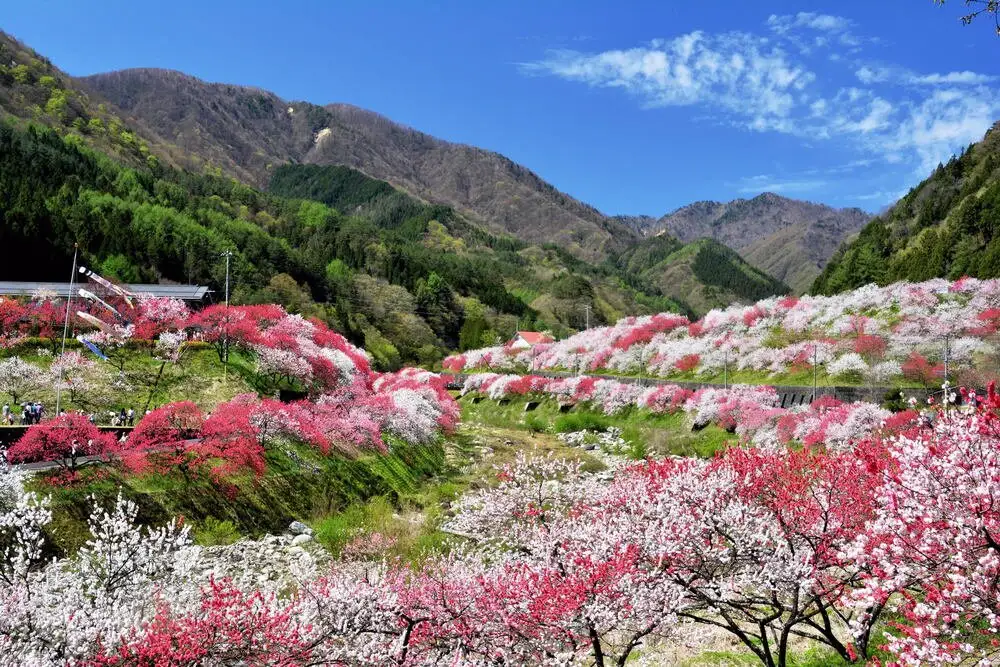
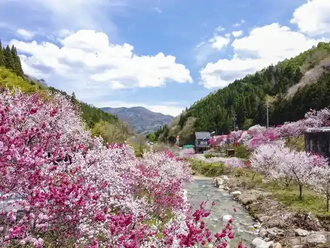
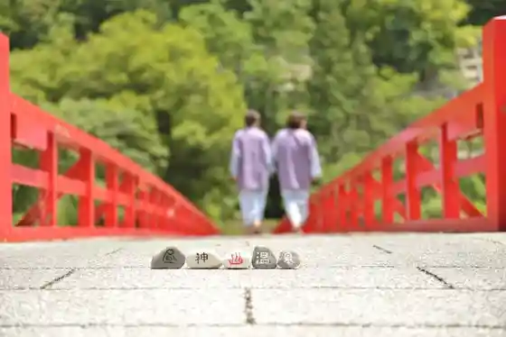
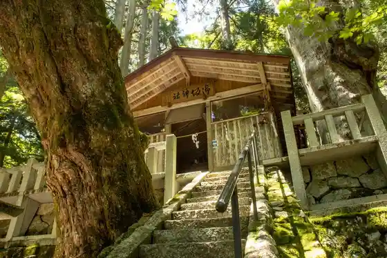
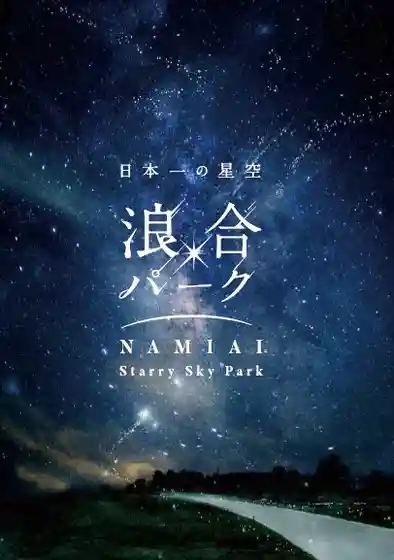

Achi
Achi · Nagano
Achi
Highlighted on the Nagano map.

Sights
Gessen Onsen no Hanamomo (Hanamomo Village)
Hanamomo Hassho no Chi (Hanamomo Kaido)
Hanamomo Kaido along National Route 256 between Achi and Nagiso, with about 5,000 flowering peach trees visible from the road.

Hirugami Onsen Sato

Kosaka Shrine
Misaka Shrine dedicated to the three Sumiyoshi sea deities, with giant sugi and tochi said to exceed 2,000 years old along the old Tosando.

Nippon'ichi no Hoshizora Namiai Park
Namiai Park star-gazing site with guided seasonal constellation talks (indoor video program when raining).

Tosando Sonohara Bijita Center Hahaki Ki Kan
Sonohara Visitor Center Hahakigi-kan mini museum and cafe on the old Tosando, with South Alps views and local hiking badges.
Hirugami Onsen Asa City
Hirugami Onsen morning market selling seasonal local produce and Achi village specialties.
Hebunsu So no Hara SnowWorld
Jibuzaka Kogen Ski Area
Jibuzaka Kogen ski area at about 1,187 m, directly off Route 153 in southern Nagano.
Koma Tsunagi Cherry Blossoms
Komatsunagi cherry, an Edohigan estimated over 450 years old, lit during bloom and tied to a Yoshitsune horse-tethering legend.